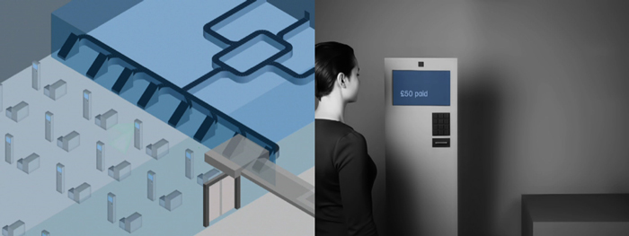
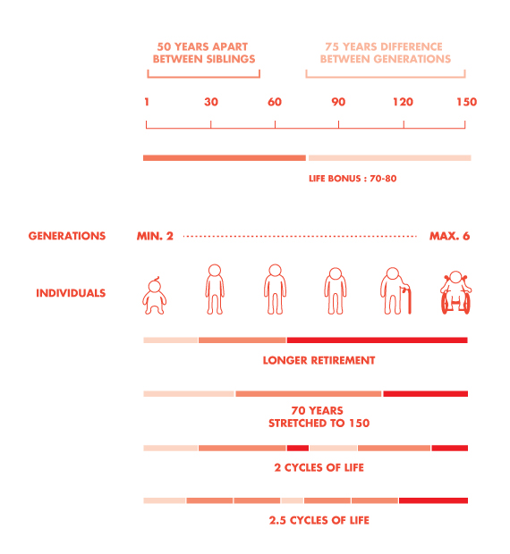

告诉我，你有多讨厌那些红点
本篇是《Speculative Everything》第三章的读书笔记。今天讨论的就是有关于批判性设计的种种。
是与不是
Dunne & Raby在上世纪90年代的皇家艺术学院（the Royal College of Art）就开始讨论批判性设计，而最早的讨论正式源自于二人在日本的体验，那时的日本充斥着无所不能的科技，人们对科技有着近乎痴狂的偏好，而批判性设计的本因正是来自于对科技“盲目相信”深深的担忧。
Affirmative Design似乎没有一个合适的中文翻译，它所体现的，是功能性与现实性，以及对现实状态的加强（design that reinforces the status quo），而批判式设计存在的意义是去尝试改变人们对日常之事的偏见与臆断。对于批判性设计而言很多人依然存在误解，其应有准确边界：
它是行为、而不是风格
批判性设计本身是一种行为，不像功能性设计中可以产生种种风格化的标签，批判性设计本身是高于形态表达的，它体现的是设计师希望通过物件实现某种行为，而行为可以触发某种被期待的思维过程，例如《Huggable Atomic Mushrooms》作品中，设计师希望血红的蘑菇云式抱枕能够让孩子们拥抱恐惧，在冲突的情感中思考原子弹以及战争对于人类的意义。
它是习惯、而不是技能
它是一种思维习惯，面对主流的、习以为常的行为模式，是否有足够冷静的理智，甚至提出另外一种可能性，这样的思考者，总在最强音中扮演静默的符号，用一种近似无声的力量点醒从众者思考，例如：Bernd Hopfengaertner在其《Belief Systems》作品中展示了一种极致用户为中心设计的体验——用户购买茶壶前，系统将展示不同类型的茶壶，突然停止，通过尖端的脸部肌肉识别功能判断用户对于不同类型茶壶的评价，最终用极致版“猜你喜欢”的形式给出最佳茶壶——以此让人们重新思考“以用户为中心的设计”。

它是线索、而不是结论
批判性设计的通常给予的是让观众或参与者自己探索的权利，而探索未知所需要的是一个指南针，而非地图。通过批判性设计的启发，人们通过自己的判断去调整或者改变自己的行为，也许每个人最后产生的行为有所不同，但其本质都是对自我行为的修正，这便是批判式设计所期待的结果。
Jaemin Paik在《When We All Live to 150》的设计中，揭示了一个人人都可以活到150岁的世界，人们可以通过契约的方式结束、延续、或转换婚姻关系，以防范过长生命中可能出现的不稳定性，同时因为人类的生殖时间变长后，人们对于儿童青年中年老年的定义也发生了偏差。对于这样一个世界，每个人都可以有自己的思考过程，他们思考的方向也许会非常不同，例如：这对税收体制有何影响？国家制度因此会有什么不同？人们财富的累积变得更多，这对经济会有怎样的影响？批判性设计的意义还在于建立一个和当前世界完全不同的模式，并留下让人思考的线索，而非给出某个确定的结论。

设计与人的悖论
设计的本质总被人为是超越人类能力的限制，去解决真实发生的问题，重要的前提是“设计让东西或者我们变得美好”，任何丑陋和负面的东西似乎都不被社会所接受成为一种设计。然而，在几乎所有的文明里，都认为人是矛盾和复杂的，以人为中心的设计却往往无法正确面对人的反复和差异，尊重人类复杂天性，这就是设计与人的悖论。
而一代又一代所重复犯得错误还有相信“幼稚的科技乌托邦（Naive Techno-utopianism）”，虚无城邦之上的是那些设计英雄，无论他们是在山景城还是望京，无论他们口中说的是“再次改变一切”还是“工匠精神”，不可否认我们的时代被他们所推动，我却依然不放弃挑战他们让新的一代放弃回到真实现实中思考的现状。
这便是批判式设计在“美好设计”的对面，用一种渐灰凝黑的方式，在某种可怕可能性下涂上下划线。这种方式本身却又不像行为艺术那样野蛮的负面，它是一个“有警醒性的故事（a cautionary tale）”，而非撕裂现实。
在之前提到的《Belief Systems》中，Bernd Hopfengaertner用一种讽刺却又真实的方式去调侃当前穿戴式设备或者人工智能的流行，这样一个设计所告诉你的是，当你忽略人的复杂与反复，尝试用“无所不能”的科技解决一切，结果便是如设计所展示的一样，令人恐怖。
从计算机到互联网、从互联网到移动互联网、从移动互联网到智能硬件和穿戴式设备，技术所做的就是在不断冲破环境的限制、侵犯人的领地，设计与人的悖论在这样一个背景下便显得尤为明显——当我第一次发现公司的仓库里有架没有人问津的Google Glasses，它巧妙包装到让你必须双手开盒，就在一种可笑的仪式感下，我人生第一次戴上了它，三秒钟后我便放下，我担心它会戳瞎我的双眼，而不是自拍一张上传朋友圈。这便是技术对人的侵犯。
因此批判性设计的初衷是让你学会思考这些看起来无所不能的设计，在无所不能体现出无能，尊重人的复杂和反复。
无厘头、幽默感和纠结
批判中往往带着讽刺，这也是对批判性设计最为集中的批判——这是愤世嫉俗的犬儒主义！换句话说，这便是批判性设计的最大难点——如何用设计的方式去除观者对批判本身的偏见，而真实思考批判对象背后的东西。
黑色幽默和无厘头（absurdity）是为妙方。Absurdity的本意是“荒谬的”，而在这里我却愿意翻译成一个更具备非破坏性、却一样充满疯癫的“无厘头”，就像那么多人研究周星驰电影中本无此意的对白，或是讨论家中到底有没有草原一样，无厘头毫无逻辑的表达有时却能产生言者未必想到的效果，这也是设计（甚至不是一种设计）除了功能之外的效用。
我们所看到的纠结其实就在这种似真似假的表达，你觉得它像是真实流露，又觉得它有些人工雕琢，一个纠结的设计让你产生思考和共鸣，这就是批判性设计的精髓所在。
让人思考的设计
所有中国的设计师都知道Don Norman的名字，他们把“别让我思考（Don't make me think）”奉为设计的最高境界，最后的结果是：学校的设计师在不断重复淘宝、微信、人人网的事情，并执意要制作一个登陆界面；刚入行的设计师从攒App、逛追波开始，到若干年后的大谈设计之道。而所有一切设计讨论背后的，都是“不用你思考”的傻乐。
这是未曾有过的时代，技术的伟大，让越来越多的人相信设计对未来的影响。乔布斯和马斯克带来的是藐视一切的狂热，你所听到的词汇，是“颠覆”、“一切”、“变革”、“强大”、“极致”，像是被烧红的烙铁，滋滋作响，他们所说的东西，似乎就是驱动这个科技时代前进独一无二的东西。
却也有人厌恶这样的生存，为什么我需要把本来的样子用超过30种的滤镜渲染？为什么我需要无时无刻知道周围空气的质量并尝试告诉所有人？为什么我需要知道朋友们每天平板支撑的数量？为什么我还需要另外的东西在我的世界里告诉我永远在线？我们甚至不能静下来听自己说话，写一段超过160字的文字，你的生活被那个无处不在的红点所牵引，而也在贡献这这样的红点，再去支配别人，像个彭罗斯阶梯般地周而复始地行走，矛盾着耗费。
这个世界突然变成了只有“你愿意看到的世界”，因为充斥在你周围的那些“贴心”的设计们，背后都是一群以把你当个傻子为骄傲的产品设计师，用“红点”化作枷锁驱使你不断强化一个从未改变的世界，在这个世界里你为相同的事情愤怒感动，你愉悦地忘记自己是个傻子，当任何一点与你所熟悉世界不同的时候，你都会冷静略带轻蔑地高冷一句“这不是我想要的”。而批判性设计的思维就是希望去挑战我们已经习以为常看到的世界，去用另外一种似真似幻的方式去让你思考另外一种可能性——做一个让人思考的设计。
到底什么是批判性设计
事实上，没有一本叫作《Speculative Everything》的书，Dunne & Raby是马克吐温小说《傻子旅行》中所记录他在大马士革见到的一对加拿大夫妇的名字，我编造了这一切，以上都只是我的观点。若你因此而开始思考和冷静看待周围一切，开始关闭朋友圈，删除微博，内心中充满对“红点”的厌恶，那么，这一切就是批判性设计。
但真正的事实是，你也不知道我说的到底是不是事实，现在你才理解什么是批判性设计。